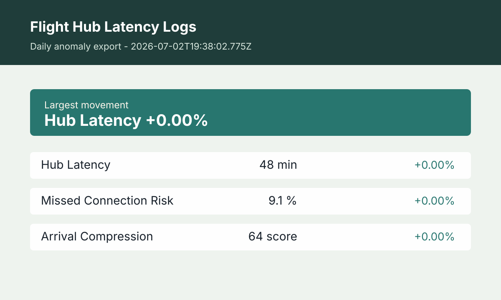

Current read
Flight hub delays are not just departure-board trivia. They affect missed connections, crew timing, gate congestion, baggage flow, and traveler decisions. This tracker turns hub latency signals into a readable operations note for travelers and aviation watchers.
The latest update was built at 2026-07-04T23:05:15.680Z. The current metric set is Hub Latency: 48 min; Missed Connection Risk: 9.1 %; Arrival Compression: 64 score. Hub Latency is the lead movement at +0.00% from the previous reading. This page is designed as a daily reference for readers who want the context behind the numbers, not just a thin quote table.
How to read this tracker
Start with hub latency minutes, then look at missed connection risk and arrival compression. Latency shows the delay load. Missed connection risk shows passenger impact. Arrival compression shows whether flights are bunching into a tighter operating window, which can stress gates and crews even when average delays look manageable.
- Hub Latency: The core delay pressure reading for the hub. It summarizes how much schedule friction is present in the current snapshot.
- Missed Connection Risk: A passenger-impact signal that rises when delay patterns make tight connections less reliable.
- Arrival Compression: A congestion signal that rises when arrivals are clustered into a narrower time window.
Editorial method
Each update compares the current operational snapshot with the previous stored snapshot and highlights the strongest movement. The article text explains what the combination of metrics may mean in the real world: schedule recovery, congestion, or compounding disruption.
Airport operations change quickly because weather, air traffic control programs, maintenance, and crew legality can move faster than a public dashboard. Travelers should always confirm directly with their airline and airport before making decisions.
Frequently asked questions
Can this tell me if my flight is cancelled?
No. It is a hub-level operations tracker. Use your airline for flight-specific status, and use this page to understand broader delay pressure.
Why does arrival compression matter?
Bunched arrivals can create gate conflicts, baggage delays, and crew pressure even when the average delay number does not look extreme.
How should travelers use this?
Treat it as a planning signal. If hub latency and missed connection risk are both elevated, allow more connection time and watch airline alerts closely.